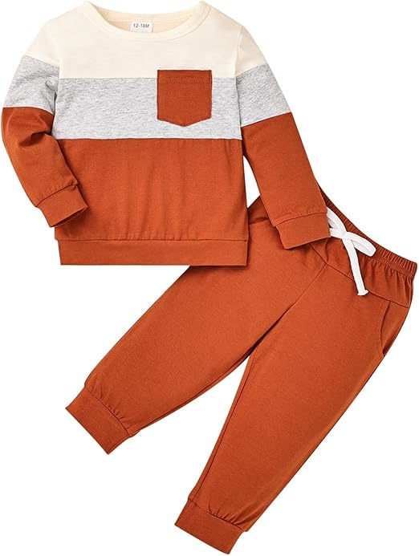
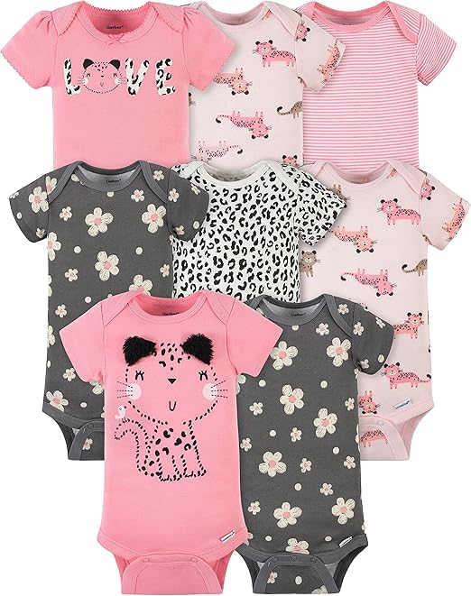
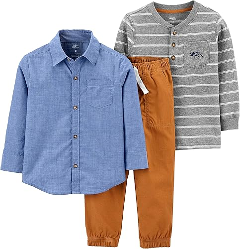
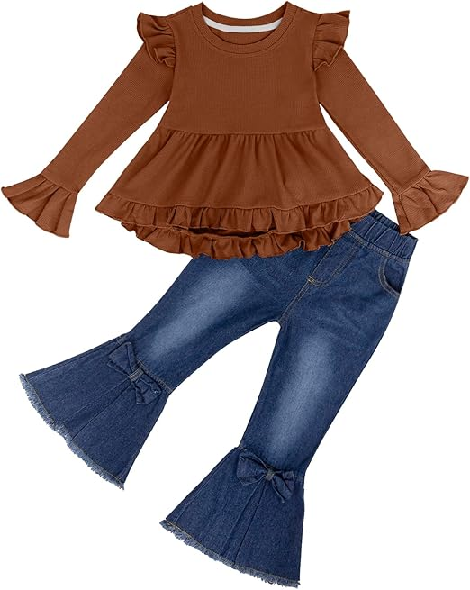

<INPUT TYPE=SUBMIT VALUE="Añadir producto al carrito" ></center>

<html>
<HEAD>
<Title>Bebés y niños</tiTle>
<!autor: Damaris Menjivar>
</head>
<body BGCOLOR="grey">
<center><h1>Bebés y niños</h1></center></right>
<HR WIDTH=70% SIZE=10% COLOR="fuchsia">
<FONT SIZE=7 COLOR=black>
<center><UL TYPE="SQUARE"></center>
<Center><LH>Ropa de otoño e invierno para bebé.</LH></font></center>
<font size=5 color=blue>
<Center></center>
<center><Li> Material:  Fabricado con 95% algodón y 5% elastano, la tela es de primera categoría y garantiza durabilidad, muy cómoda al tacto.</center>
<center><Li> La camiseta tiene un bonito bolsillo pequeño en la parte delantera, los pantalones cuentan con una cintura elástica y bolsillos laterales.</center>
<center><Li> Color Beige.</center>
<center><Li> Talla 12 a 18 meses.</center>
<center><Li> US $10.95</center>
<center><Li>Instrucciones de cuidado del material: Lavar en la lavadora.</center>
</UL></font>
</BODY>
</HTML>


<DL>
<FONT SIZE=7 COLOR=black>
<HR WIDTH=70% SIZE=10% COLOR="fuchsia">
<center><LH>Chaqueta con capucha para bebé</LH></center>
<font size=5 color=black>
<center></center>
<DT>Tipo de tela:
<font color=blue>
<DD>55% algodón, 45% poliéster; forro: 100% poliéster.</font>
<DT>Estilo:
<font color=blue>
<DD> Con capucha y orejas 3D, Diseño con cierre de cremallera completo.</font>
<DT>Color:
<font color=blue>
<DD>Gris.</font>
<DT>Talla:
<font color=blue>
<dd>3-6 meses</font>
<DT>US:
<font color=blue>
<dd>$15.00</font>
<DT>Instrucciones de cuidado del material:
<font color=blue>
<dd>Lavar a máquina.</font>
</DL>
</BODY>
</HTML>


<FONT SIZE=7 COLOR=black>
<center><UL TYPE="square"></center>
<HR WIDTH=70% SIZE=10% COLOR="fuchsia">
<Center><LH>Paquete de 8 mamelucos de manga corta para niñas bebés.</LH></font></center>
<font size=5 color=blue>
<Center></center>
<center><Li> Tipo de tela:100% algodón que proporciona mayor transpirabilidad.</center>
<center><Li> Cierre de presión inferior superior en la parte delantera para facilitar el cambio, Incluye ocho mamelucos blancos de manga corta.</center>
<center><Li> Color rosa (Leopard PINK).</center>
<center><Li> Talla 6-9 meses.</center>
<center><Li> US $21.99</center>
<center><Li>Instrucciones de cuidado del material: Lavar a máquina o secar en secadora.</center>
</UL></font>
</BODY>
</HTML>


<FONT SIZE=7 COLOR=black>
<UL TYPE="Square">
<HR WIDTH=70% SIZE=10% COLOR="fuchsia">
<Center><LH>Conjunto de ropa de juego de 3 piezas para niño.</LH></font></center>
<font size=5 color=blue>
<center></center>
<Li>Tipo de tela: 100 % Algodón, hecho de tela suave. 
<Li>Camiseta de manga larga con una parte inferior a juego, con un pantalón color marrón, lo que permite combinaciones de atuendos.
<Li> Color Azul/Marrón/Gris.
<Li> Talla 5</center>
<Li> US $25.70
<Li>Instrucciones de cuidado del material:Lavable a máquina y construido para soportar el desgaste.
</UL></font>
</BODY>
</HTML>


<DL>
<FONT SIZE=7 COLOR=black>
<HR WIDTH=70% SIZE=10% COLOR="fuchsia">
<center><LH>Conjunto de 2 piezas, blusa acampanada, jeans acampanados.</LH></center>
<font size=5 color=black>
<center></center>
<DT>Tipo de tela:
<font color=blue>
<DD>De Algodón, hecho de tela suave.</font>
<DT>Estilo:
<font color=blue>
<DD> Con detalles encantadores en la blusa que da un estilo acampanado, jeans acampanados añaden un elemento moderno y elegante.</font>
<DT>Color:
<font color=blue>
<DD>Cafe/Azul.</font>
<DT>Talla:
<font color=blue>
<dd>6</font>
<DT>US:
<font color=blue>
<dd>$23.99</font>
<DT>Instrucciones de cuidado del material:
<font color=blue>
<dd>Lavar a máquina.</font>
</DL>
</BODY>
</HTML>

<center><A HREF="PARCIAL TIC.html">REGRESO AL INICIO</A></center>